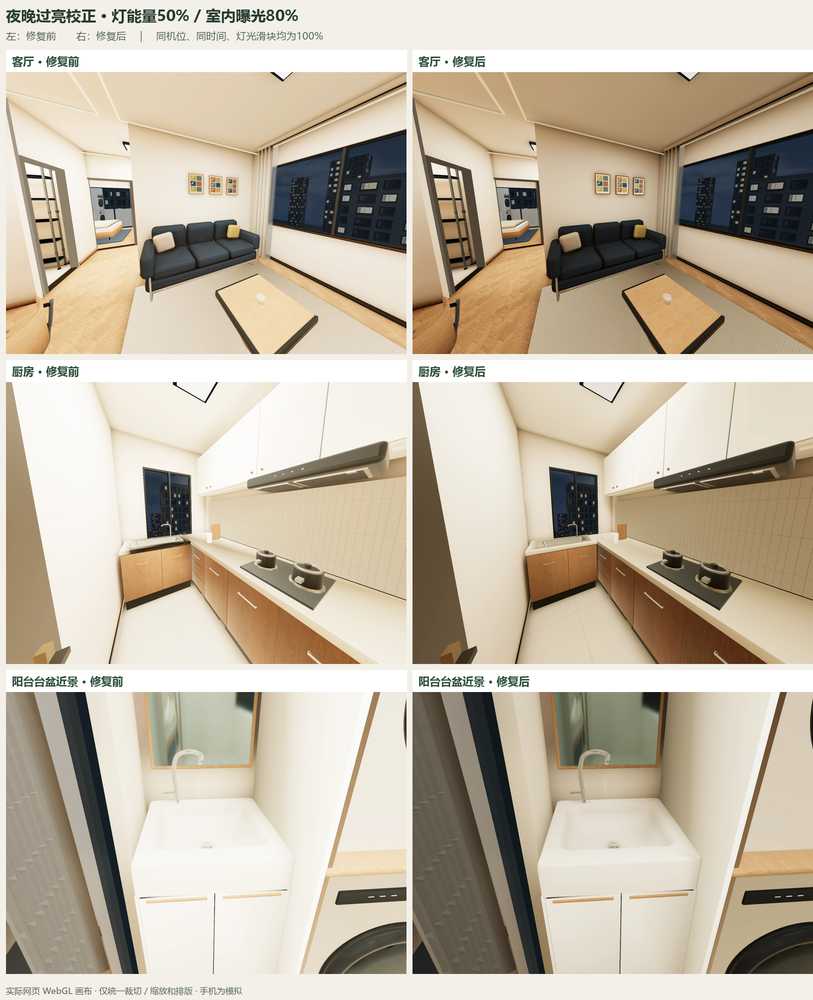
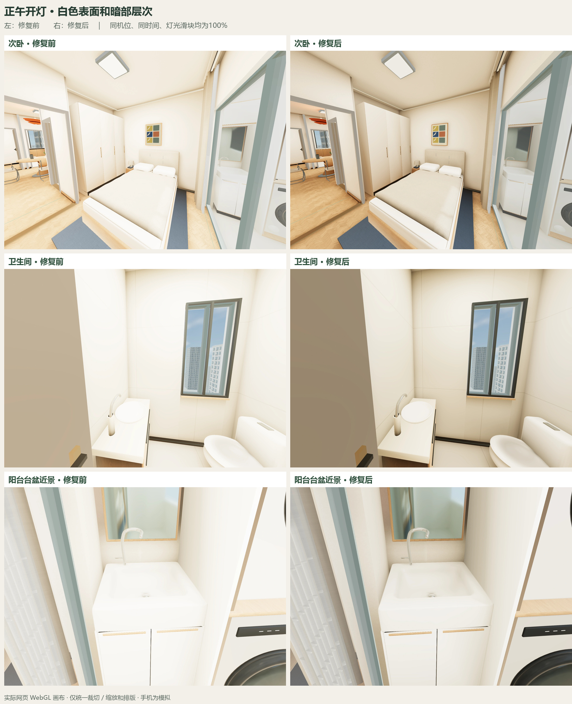
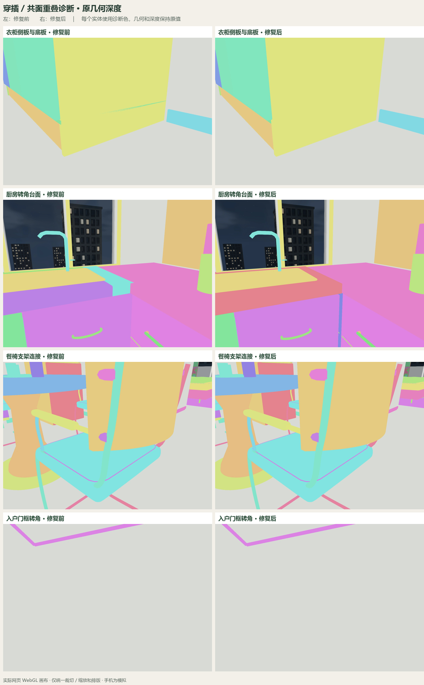

杭州 · 璞荟铭庭 / main 当前校正
过曝与模型穿插修复
本轮实际校正了室内亮度，并处理模型共面重叠。上方查看正常画面，下方用独立诊断色和小幅横移检查衣柜、厨房台面、餐椅与门框。所有图均来自真实网页画布。
正常画面前后对比
过亮区域变化
下表统计桌面同机位中显示亮度≥245/255的像素占比，包含可见灯具；它是用于复核的像素指标，不是实际照度或摄影曝光测量。正常镜面高光、灯具发光和窗外仍可较亮。
| 画面 | 修复前 | 修复后 |
|---|---|---|
| 厨房 · 夜晚 | 18.62% | 0.54% |
| 卫生间 · 夜晚 | 14.11% | 0.00% |
| 阳台台盆近景 · 夜晚 | 7.86% | 0.00% |


重叠面与横移诊断
以下为诊断图：每个实体部件换成固定颜色，去掉材质与光照干扰，几何、深度测试和相机保留原值。衣柜侧板的杂色条纹显示两个表面争夺相同深度；厨房转角原有约30mm的实体交叠。按钮在中心前后各20mm的相机位置间切换，便于复查。

修复与验证范围
衣柜顶/底板嵌入侧板内侧；洗烘柜、台盆柜与厨房柜板按实际板厚收口；餐椅支架端面错开并埋入连接座；书桌横撑缩入立柱。厨房北台面改为一个带真实水槽开孔的闭合实体，并与东侧台面相接。门框竖边终止于横边和门槛内侧，避免转角重复表面。没有使用全局深度偏移、双面材质或移动原墙来掩盖问题。
对18类重建资产的实际桌面/手机装配表面进行法线射线抽样：原26/27组近共面候选降至0；厨房台面交叠从约30mm变为桌面0mm、手机约0.102mm接缝。654份双档实体闭合检查及两档水槽台面4284条覆盖射线无缺口，装配连通和门扫掠/闭合/通道回归通过。抽样不是任意自交的数学证明。
本页有48组正常画面前后对比（96张）和4处×3机位×桌面/手机的前后诊断（48张）。每次正常画面等待16位静态照明和房间反射加载完成，再等3帧截图。重新生成124张Cycles照明/AO/反射图；建筑快照和219张旧烘焙保持。64种浏览器/扩展光照状态、设置保存、缺HDR/depth回退、离线与横竖屏检查通过。手机与微信UA、Windows WebKit均为模拟；真机微信仍待验证。单HTML约40MB。